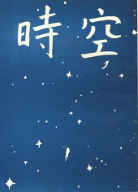

《時空》第三期
目錄
物理學會的報告
林英琛
3
從刊物上的論文所看到的各國物理學水準
中國物理學刊編輯部
5
與袁家騮、吳健雄二位博士一席談
10
給讀大學的青年朋友
劉容生譯
12
校友來鴻
劉容西
15
獨思偶得
山由
17
偶感雜記
劉源俊
20
結
知心人
23
我
葉文正
24
萍水相逢
葉文正
25
關原即景
費頓
26
無題
左巴
27
西班牙葡萄酒
姚樂文譯
29
通訊錄

出版者：台大物理學會
印 刷 廠：福元印刷廠
出版日期：民國五十五年五月
台大訓導處登記第209號